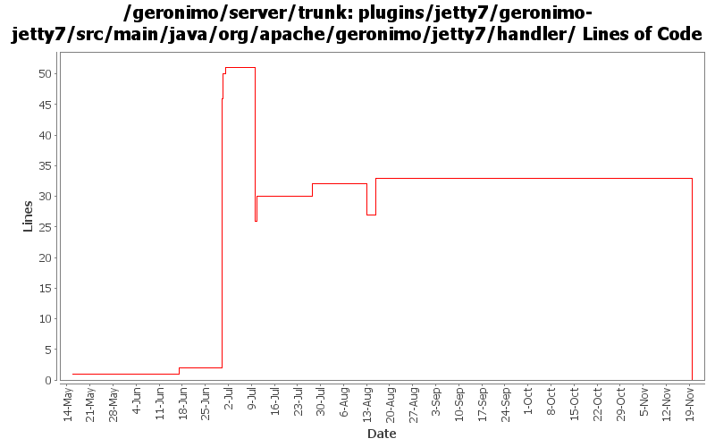

[root]/plugins/jetty7/geronimo-jetty7/src/main/java/org/apache/geronimo/jetty7/handler

| Author | Changes | Lines of Code | Lines per Change |
|---|---|---|---|
| Totals | 43 (100.0%) | 87 (100.0%) | 2.0 |
| djencks | 42 (97.7%) | 82 (94.3%) | 1.9 |
| gawor | 1 (2.3%) | 5 (5.7%) | 5.0 |
rename jetty7 to jetty8
0 lines of code changed in 17 files:
Upgrade to ee6 specs for servlet, ejb. Upgrade to jetty 8. Use jpa 1.0 spec labelled 1.0. Don't try to include openwebbeans until it has available snapshots
1 lines of code changed in 1 file:
GERONIMO-4645 fix WebUserDataPermission ':' escaping
16 lines of code changed in 1 file:
GERONIMO-4645 use jacc ejb ws auth for jetty6, simplify SOAPHandler interface
1 lines of code changed in 1 file:
GERONIMO-2622, GERONIMO-4766 Implement jacc handler data so the types dont interfere with each other. ejb and soap handlers not hooked up yet
4 lines of code changed in 1 file:
GERONIMO-4740 fix jetty run-as handling
4 lines of code changed in 1 file:
GERONIMO-4645 Make ejb ws security more jacc friendly, implement transport guarantees for jetty7 using jacc. See jira for more comments
6 lines of code changed in 1 file:
GERONIMO-4645 Fix some of the testsuite failures. I think the remaining tests should be changed
4 lines of code changed in 1 file:
recognized wsdl requests better
5 lines of code changed in 1 file:
GERONIMO-4645 reimplement ejb web service security. Also GERONIMO-4689 clean up code by renaming and moving classes.
44 lines of code changed in 6 files:
GERONIMO-4689 Cleanup code in jetty7 integration
2 lines of code changed in 6 files:
GERONIMO-4553 Make web use of security realms depend on plugin visibility; make console expose the 'global' attribute for configuration (renamed from 'publish'). Also merges in geronimo-security changes from sandbox branches.
0 lines of code changed in 2 files:
tweak jetty7 integration to recent api change
0 lines of code changed in 4 files: